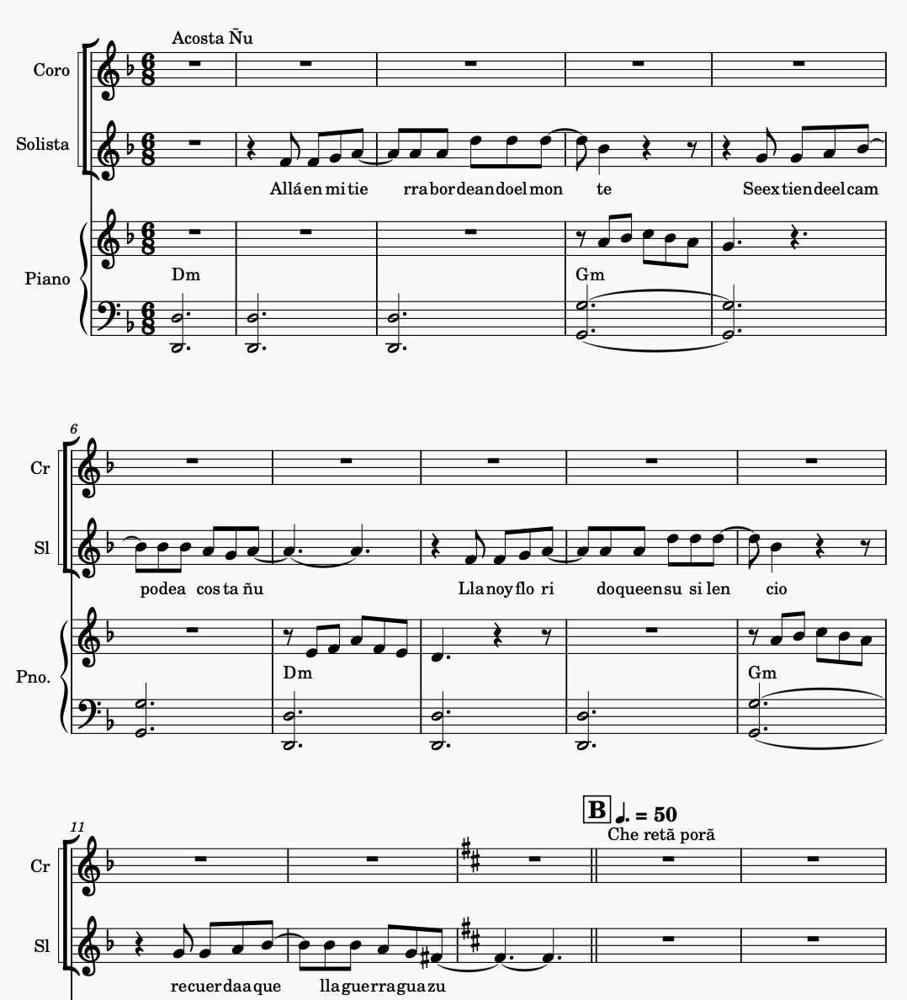
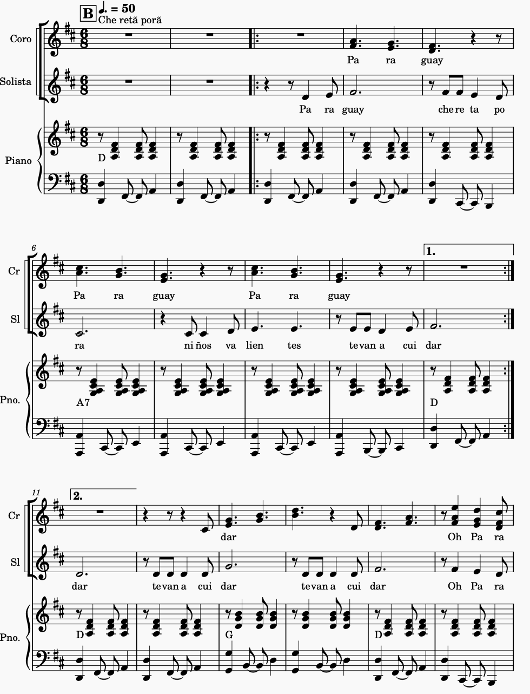
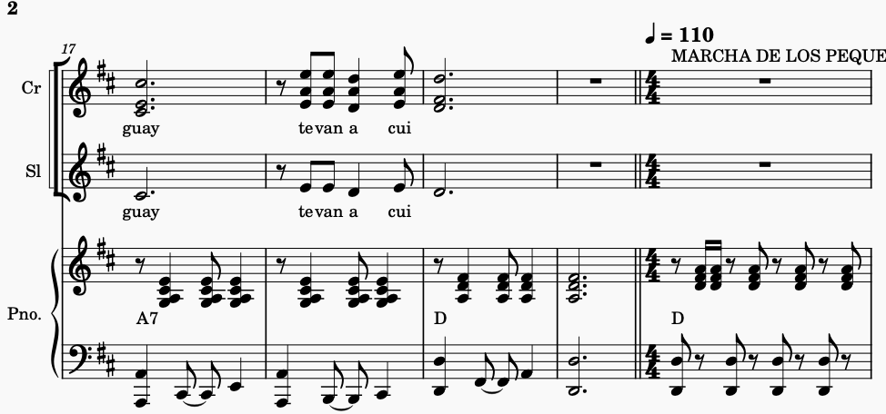
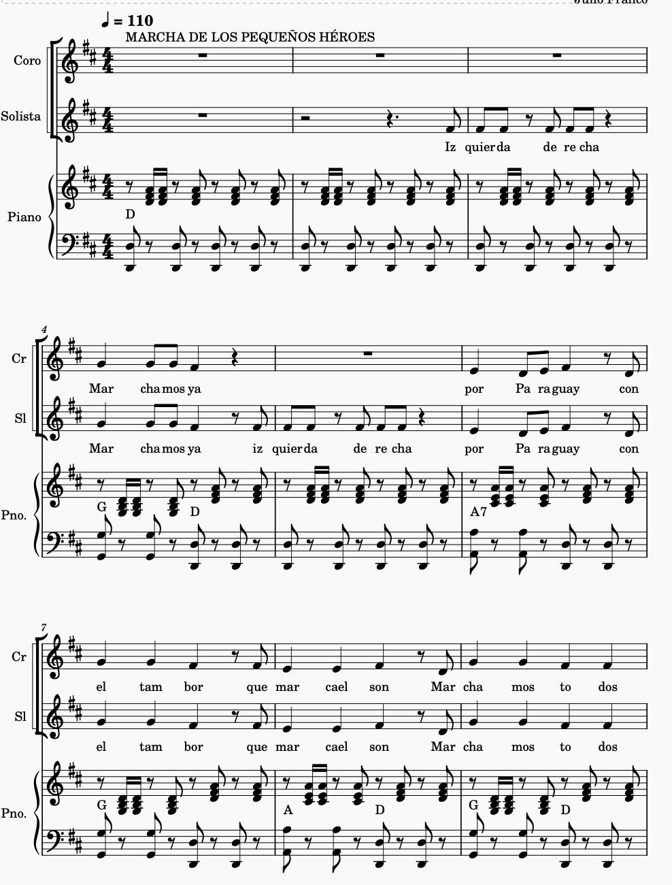
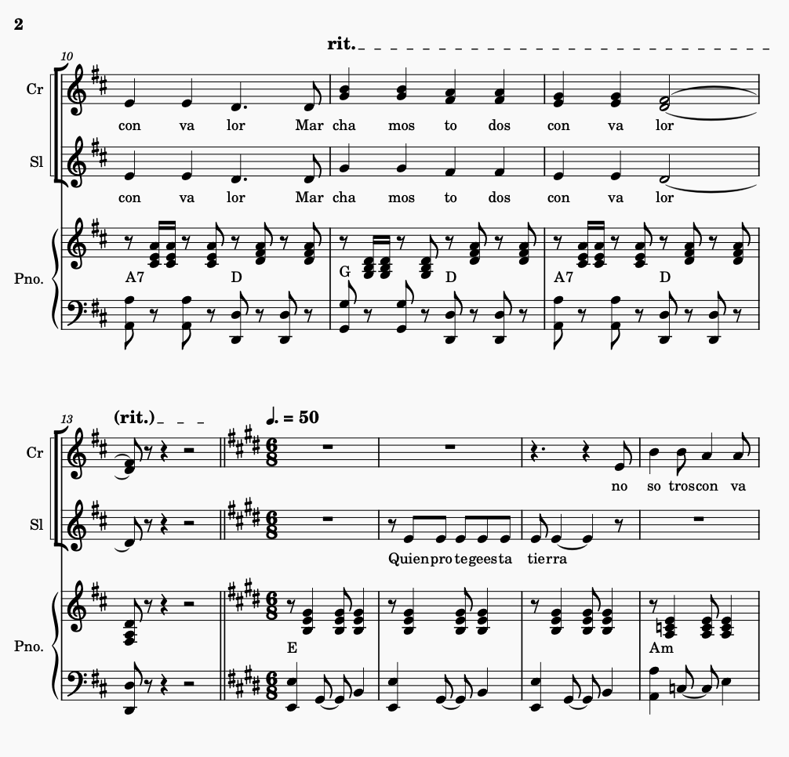
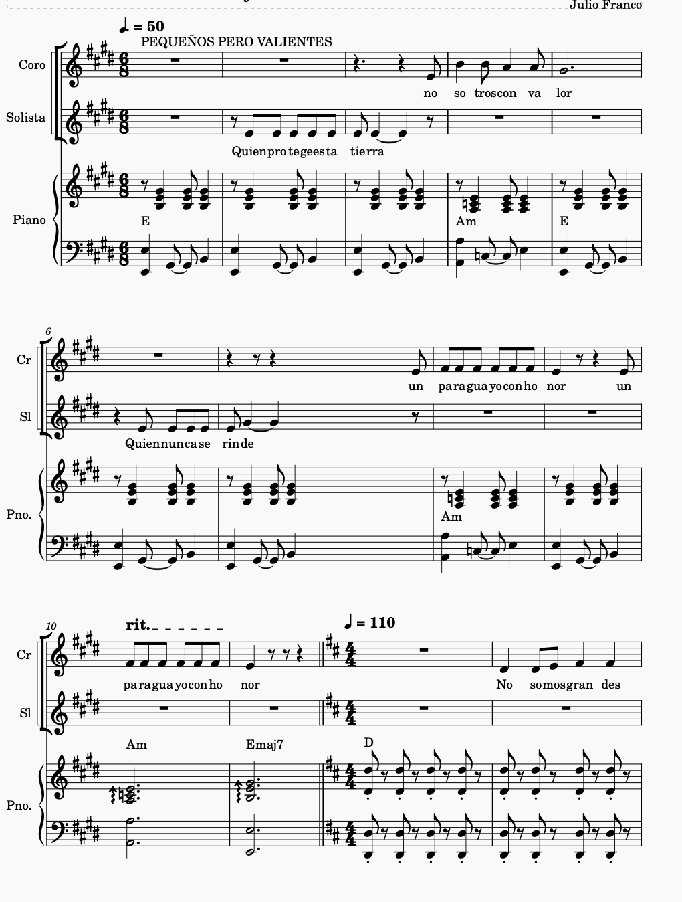
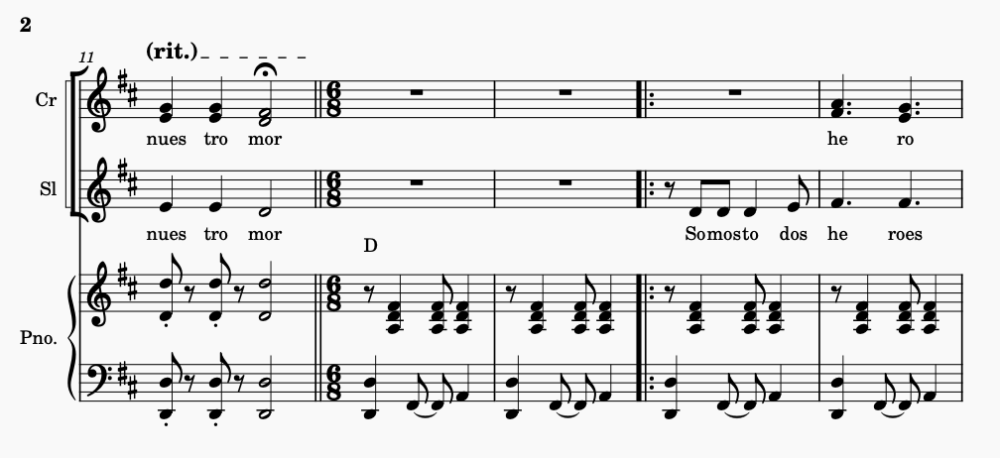
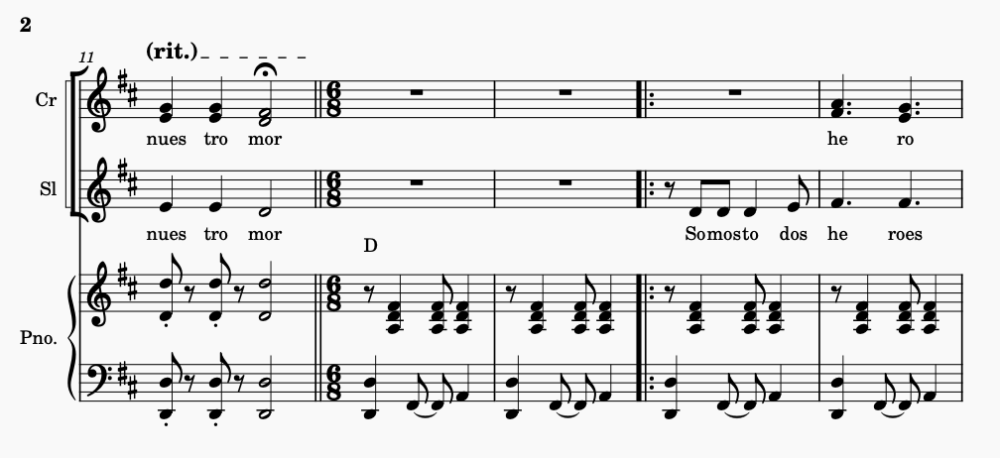
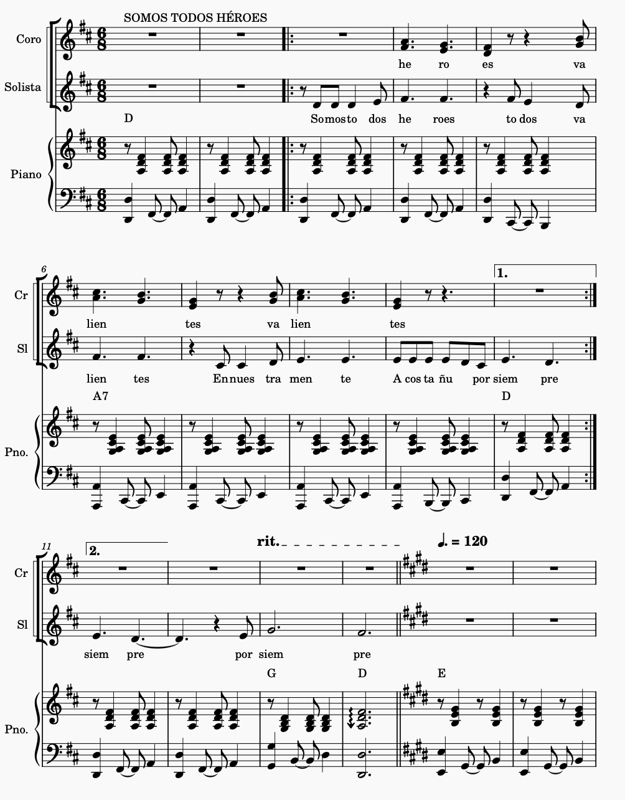
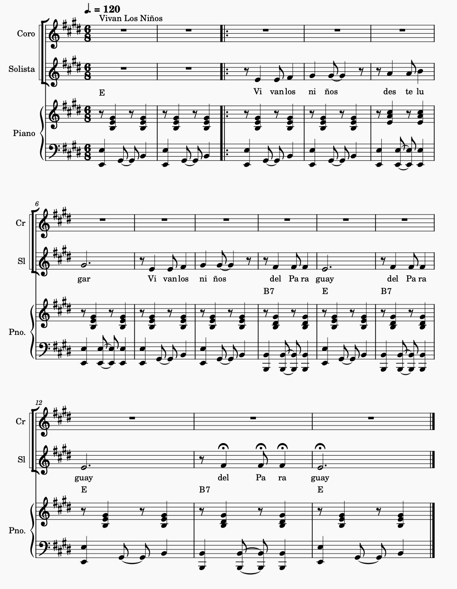

🎭 Los Pequeños Héroes de Acosta Ñu 🎭
Obra de Teatro Musical
Idea Original del Prof. Lic. Julio Franco
Para 7 niños de 8-9 años
Duración aproximada: 20-25 minutos
Un homenaje a los niños héroes del Paraguay
🎨 ESCENOGRAFÍA ECONÓMICA:
- Fondo: Tela blanca o papel kraft pintado con cielo azul y nubes
- Árboles: Cartón pintado de verde, sostenidos con bases
- Banderas: Tela roja, blanca y azul en palos de madera
- Accesorios: Sombreros de papel, flores de papel para el final
👕 VESTUARIO DETALLADO:
- Soldaditos Niños: Camisa blanca, pantalón de tela oscura (azul o negro), pañuelo rojo al cuello, sombrero de papel pintado como kepí militar, fajín rojo en la cintura
- Madre Patria: Vestido blanco largo o falda blanca + blusa, corona de flores o diadema dorada, capa o chal azul
- Ángel de la Paz: Túnica blanca (sábana), alas de cartón blanco, diadema plateada o dorada
- Narrador: Camisa blanca, chaleco oscuro, corbata o moño
- Todos: Pies descalzos o alpargatas, opcional: maquillaje suave en mejillas
🖼️ GALERÍA DE ESCENOGRAFÍA:
Referencias visuales para la puesta en escena
ESCENA 1: "NUESTRA PATRIA QUERIDA"
Vestido blanco, corona de flores, capa azul representando Paraguay
Fondo Campestre
Paisaje de Acosta Ñu con cielo azul, nubes blancas y campo verde
Vestuario Soldaditos
Uniformes sencillos: camisa blanca, pantalón oscuro, pañuelo rojo
Ángel de la Paz
Túnica blanca, alas de cartón, diadema dorada simbolizando esperanza
Elementos Patrióticos
Banderas, flores de papel, decoración en colores patrios
Escena Completa
Vista general del escenario con todos los elementos integrados
PERSONAJES:
Narrador(a): Persona con buena dicción - Podría ser un niño o un persona mayor (Un Profesor)
Capitán Niño: Líder del grupo
Soldaditos 1, 2, 3 o más: Compañeros valientes
Madre Patria: Representa a Paraguay
Ángel de la Paz: Mensajero de esperanza
Coro: Todos los niños participantes
ESCENA 1: "NUESTRA PATRIA QUERIDA"
CANCIÓN Introductoria - Acosta Ñu
2 niños cantan con añoranza:
🎵 "Allá en mi tierra bordenado el monte,
se extiende el campo de Acosta Ñu.
Llano y florido que en su silencio,
recuerda aquella guerra guazú." 🎵
🎼 Partitura "Acosta Ñu"
Narrador: "Había una vez una tierra hermosa llamada Paraguay, donde vivían niños valientes que amaban mucho a su patria. En esos tiempos difíciles, cuando la guerra amenazaba la paz de sus hogares, los espíritus de estos pequeños valientes brillaban con fuerza."
CANCIÓN: "Che Retã Porã"
Coro de todos los niños:
🎵 "Paraguay che retã porã,
niños valientes,
te van a cuidar,
Estribillo
Te van a cuidar... te van a cuidar,Oh Paraguay che retã porã🎵
🎼 Partitura "Che Retã Porã"
 ESCENA 2: "MARCHA DE LOS PEQUEÑOS HÉROES"
Capitán Niño: "¡Soldaditos, en formación! ¡Marchemos por nuestra patria!"
Soldaditos: (marchan en el lugar) "¡Sí, capitán!"
CANCIÓN: "MARCHAMOS JUNTOS"
Marcha cantada con percusión fuerte:
🎵 "¡Izquierda, derecha, marchamos ya!
¡Izquierda, derecha, por Paraguay!
Con el tambor que marca el son,
¡marchamos todos con valor!" 🎵
🎼 Partitura "Marcha de los pequeños héroes."
 ESCENA 3: "LA LLAMADA DEL DEBER"
Madre Patria: "Mis pequeños hijos, nuestra tierra necesita protección. ¿Están listos para ser valientes?"
Capitán Niño: "¡Sí! Somos pequeños pero tenemos corazones grandes."
Soldadito 1: "¡Protegeremos nuestra casa!"
Soldadito 2: "¡Juntos somos más fuertes!"
CANCIÓN: "PEQUEÑOS PERO VALIENTES"
Solo del Capitán Niño, coro responde:
🎵 Capitán: "¿Quién protege esta tierra?"
Coro: "¡Nosotros con valor!"
Capitán: "¿Quién nunca se rinde?"
Coro: "Un paraguayo con honor!" 🎵
🎼 Partitura "Pequeños Pero Valientes"
ESCENA 4: "MELODÍA DEL CORAZÓN"
Narrador: "Llegó un día difícil en Acosta Ñu. Los niños sabían que tenían que ser muy valientes."
Soldadito 3: "Aunque somos pequeños, nuestro amor por Paraguay es gigante."
Capitán Niño: "No importa lo que pase, siempre recordarán que fuimos valientes."
CANCIÓN: "CORAZONES VALIENTES"
Solo suave, todos cantando:
🎵 "No somos grandes, pero somos fuertes,
en nuestro pecho late el corazón,
por Paraguay, por Paraguay,
damos todo nuestro amor." 🎵
🎼 Partitura "Corazones Valientes"
 

ESCENA 5: "LA TRANSFORMACIÓN"
Ángel de la Paz: (aparece con alas de papel blanco) "Los niños valientes nunca mueren, se convierten en estrellas que cuidan su patria."
Madre Patria: "Por eso, cada 16 de agosto, todos los niños de Paraguay celebran su día."
Narrador: "Y desde ese día, todos los niños paraguayos son héroes también."
CANCIÓN: "SOMOS TODOS HÉROES"
Crescendo gradual, todos cantando:
🎵 "Somos todos héroes,
todos valientes,
en nuestra mente
Acosta Ñu por siempre." 🎵
🎼 Partitura "Somos Todos Héroes"
ESCENA 6: "GRAN FINALE - POLKA DE LA VICTORIA"
Todos los niños: "¡Hoy es nuestro día! ¡El día de todos los niños!"
Capitán Niño: "Recordamos a los héroes pequeños, y celebramos que somos el futuro de Paraguay."
CANCIÓN FINAL: "VIVAN LOS NIÑOS" (Polka)
Todos cantando y bailando polka:
🎵 "¡Vivan los niños de este lugar!
¡Vivan los niños del Paraguay!" 🎵
(Repetir mientras bailan y lanzan flores de papel)
🎼 Partitura "Vivan Los Niños" (Polka Final)
🎭 NOTAS PARA LA PUESTA EN ESCENA:
- Entrada: Los niños entran marchando suavemente al ritmo de la primera canción
- Escena 2: Marcha militar real, formación en línea, banderas en alto
- Movimientos: Simples pero coordinados - marchar, levantar banderas, abrazarse
- Cambio de escenas: Usar la música de transición mientras los niños se reposicionan
- Final: Todos se toman de las manos y hacen una reverencia
- Flores de papel: Preparar flores de papel para lanzar en el final
MENSAJE FINAL:
"Esta obra honra la memoria de los niños de Acosta Ñu, transformando su sacrificio en inspiración para las nuevas generaciones. Cada niño que participa se convierte en un pequeño embajador de la historia paraguaya."